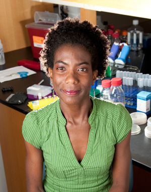

News Archives : 2012 : Karine Gibbs Wins Coveted Packard Foundation Fellowship
by Richard Saltus
October 19, 2012

Karine Gibbs has been awarded a prestigious Packard Foundation Fellowship in Science and Engineering for 2012. She is among 16 recipients chosen by an advisory panel of nationally recognized scientists and engineers from a field of 98 researchers nominated by the presidents of 50 universities that participate in the fellowship program.
Packard Fellows are in early stages of their careers. Each receives an unrestricted research grant of $875,000 over five years, and are encouraged to “think big.” The program, which began in 1988, bears the name of David Packard, co-founded of the Hewlett-Packard Company. His belief, says his daughter, Susan Packard Orr, chair of the foundation, was to “hire extraordinary people, give them some tools and resources, and let them invent the next great thing.”
Gibbs, who joined the MCB faculty in 2010, studies the mechanisms that allow cells and organisms to distinguish genetic “self” from “non-self” using as a model system the bacterium Proteus mirabilis because its recognition of self influences visible behavior.
"I am thrilled and honored to have received the Packard Award, which will provide significant support in sustaining our research,” Gibbs said.
She finds P. mirabilis to be intriguing because the organisms segregate themselves into different populations, thanks to their endowment with genes that enable self-recognition. “For me,” Gibbs says, “the most exciting aspect of our research is that we are examining a behavior (self versus non-self recognition) fundamental to many aspects of biology such as the vertebrate immune system, territorial behavior in animals, and others.”
Over the past 25 years, the Packard program has awarded $316 million in fellowships to support 489 faculty members from 52 top universities. Packard Fellows have gone on to win such honors as the Nobel Prize in Physics, the Fields Medal, the MacArthur Fellowships, and election to the National Academy of Sciences and the National Academy of Engineering.
This fall Gibbs is teaching a new course, MCB 121, on Microbes in Disease and the Environment, a general microbiology course.